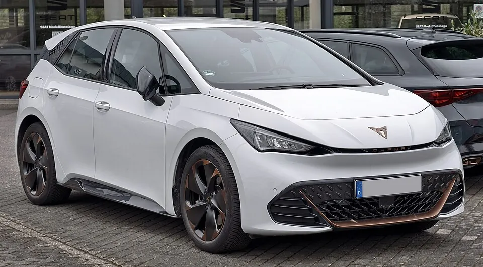
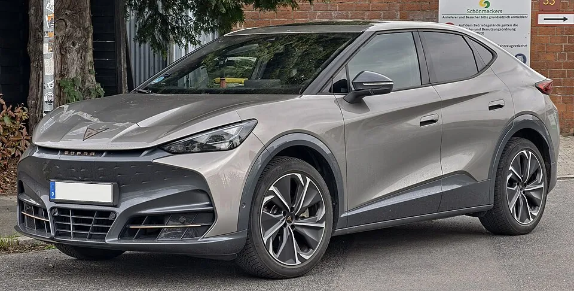

Spain
Cupra
Cupra started as SEAT's sporty badge and became a separate brand in 2018, with sporty petrol, hybrid and electric models.
- Founded
- 2018
- Models
- 5
- Generations
- 5
- In production
- 5
- generations
- Photos
- 5
Range

Electric


All models and generations
5 models, each with all its generations.
In production


Source: Wikipedia, CC BY-SA 4.0.